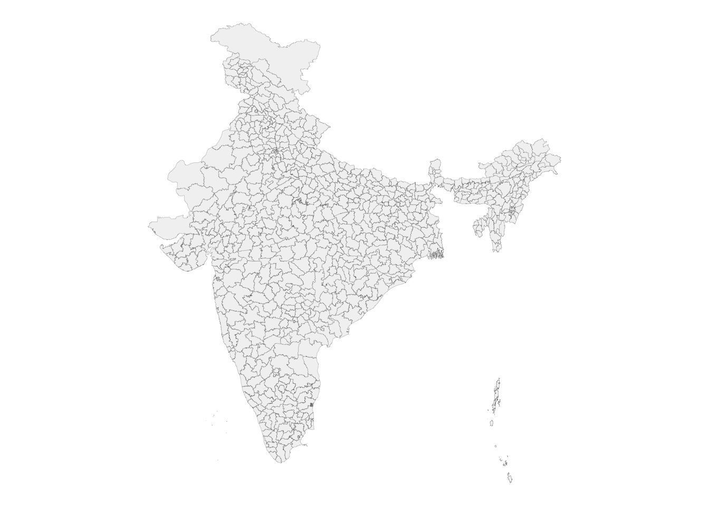

A thematic map in which values of a variable are encoded with a colour gradient.
The spatial counterpart of the histogram.
Three choices decide whether it informs or misleads:
What you map: rates, not raw counts
How you classify: the breaks (quantile, equal-interval, Jenks)
Which colours: sequential vs diverging, colour-blind safe
Rates, not counts
Counts mostly track population size, so a count map is often just a population map.
Map rates (per 1000, per 100k) or proportions to compare places fairly.
Small-population areas give unstable rates: a single case swings them. Note this when you read the map.
Colour, classification, accessibility
Sequential palette for low-to-high; diverging for departure from a midpoint.
Use colour-blind-safe palettes (viridis) and keep classes few (4 to 6).
The same data with different breaks tells different stories: always state the scheme.
A map is spatial data
library(sf)library(tidyverse)library(here)districts <-read_rds(here("spatial_files", "india_district_sf.rds"))ggplot(districts) +geom_sf(linewidth =0.05, fill ="grey95", colour ="grey40") +theme_void()

District polygons read with sf. Geometry plus attributes is all we need to start mapping.
Building a choropleth (pattern to reuse)
districts |># an sf objectleft_join(indicator_df, by ="district") |># attach the variableggplot() +geom_sf(aes(fill = stunting), colour ="white", linewidth =0.1) +scale_fill_viridis_c(option ="magma", direction =-1) +theme_void()
You build exactly this in Exercise 6 (NFHS stunting). The same recipe drives the maps in the rest of the module.
Recap
The map is the first instrument: design it with care (contrast, hierarchy, honest rates, safe colour).
Choropleth choices: what (rates not counts), how (breaks), which (colour).
One sf + ggplot2 recipe builds every map in the module.